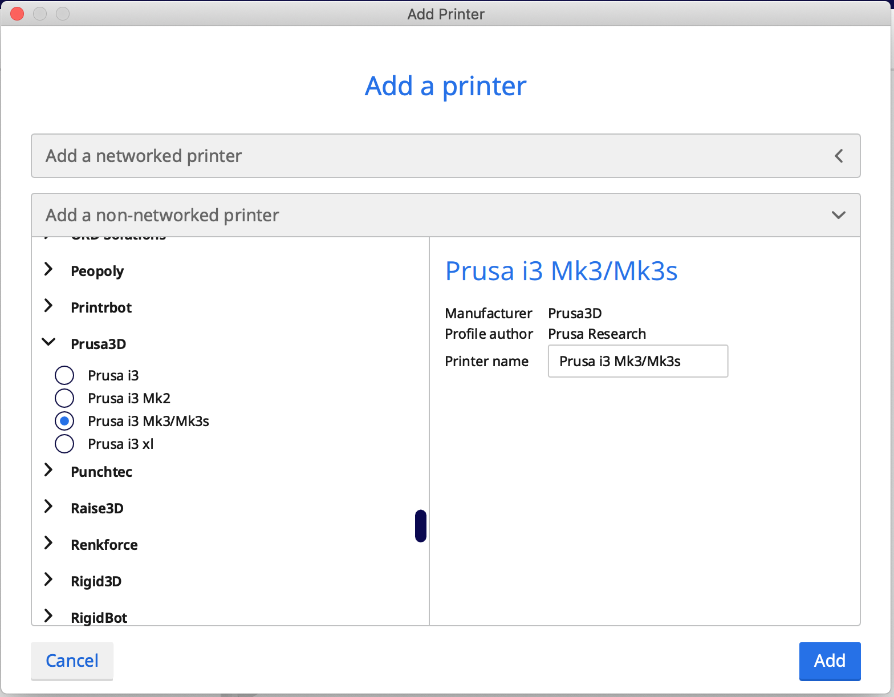

This is me.

Hannaðu módel fyrir 3D prentun sem ekki væri hægt að framkvæma með frádráttar framleiðslu (addative vs subtractive). Prentaðu hlutinn (max 100g af plasti skv. slicer). 3D Skannaðu einhvern hlut, t.d. með photogrammetríu. Sýndu framvinduna á heimasíðunni þinni.
Strax og við fengum þetta vekefni vissi ég að ég vildi nýta tækifærið í að leysa smávægilegt vandamál sem á sér stað á heimilinu. Eftir örlitta leit á netinu vissi ég hvað ég vildi prenta út.
Með þónokkra reynslu í tölvuteikingu vissi ég nákvæmlega hvernig ég vildi teikna hlutinn í Fusion 360.
Ég byrjaði á því að teikna botninn á bómullarstandinum og dór hann svo upp.
Eftir að ég var búinn að draga standinn upp vildi ég búa til sveipa framhliðinni til að nálgast bómul sem liggur á botninum auðveldlega.
Fyrirmæli verkefnisins voru að hann módel fyrir 3D prentun sem ekki væri hægt að framkvæma með frádráttar framleiðslu. Ef það væru bara göt frá einni hlið á þessu módeli væri hægt að framkvæma það með frádráttar framleiðslu. Til þess að geta hengt þetta á vegg gerði ég göt á bakhliðinni.
Þegar maður hannar módel til útprentunar verður maður að hafa ákveðnar skorður í huga. Þessar skorður kíktum við vel á í Hópverkefni 2. En nú var mitt módel tilbúið.
Þetta var svo geymt sem .stl skjal og opnað í Cura Ultimatker
Þegar maður opnar forritið Ultimaker Cura þá er maður strax beðinn um að velja sér prentara, það er mjög auðvelt að finna nánast alla prentara sem til eru á þessum lista.
Þegar ég opnaði hlutinn í Ultimaker Cura þá lá hann á bakinu. Svo ég þurfti að snúa honum þannig að hann stæði uppréttur. Ef hluturinn hefði verið prentaður liggjandi á bakinu þá væru svo stór "hangover" sem myndu leka að prentið hefði verið eyðilagt. Eftir að hönnunin snýr rétt þá ýtir maður á slice og hún reiknar útprentunarleið og tímann sem tekur að prenta þetta út
Eins og sjá má var áætlaður tími 13 klukkustundir og 6 mínútur. Næsta skref var að ýta á Save to file, þar sem skjalið var geymt á SD korti sem var svo sett inn í prentarann. Í prentaranum var skjalið svo valið og ýtt á prenta.
Prentarinn sem var valinn heitir Prusa i3 MK3S. MK3S. Prentið mitt var sett á stað og eftir 13 tíma bið var það tilbúið.

Til að gera þrívíddarskönnun náði ég í forritið Qlone. Þegar maður er búinn að sækja forritið í símann sinn fær maður góðar leiðbeiningar hvað þarf að gera til að skanna hlut.
Til að hefjast handa þarf maður að byrja á því að prenta út mottu, sem maður setur hlutinn á.
Mottan gerir forritinu kleift að átta sig á stærð hlutar ásamt því að geta greint frá skilum hlutar og bakgrunns.
Ég prófaði þó nokkuð marga hluti sem ég fann á heimilinu en þeir voru allir aðeins of stórir. Leyfileg stærð hlutar er háð þvó hvað "mottan" sem prentuð var út var stór. Mín var A4 en það var hægt að fá mynd fyrir A3, A2 og A1, ef maður vildi skanna inn stærri hluti. Mér tókst að lokum að finna skemmtilegan hlut með ágætu flækjustigi vegna holrúmst á milli vængja. Hluturinn sem ég valdi er Star Wars geimskutla fengin úr Happy Meal fyrir mörgum árum.
Þegar ég hóf skönnun á hlutnum fann ég mér ostabakka sem snýst, mér til þægindar, svo ég þyrfti ekki að labba i kringum allan hlutinn. Birtan var einnig að trufla mig mikið svo ég fann mér tvo auka síma sem ég notaði sem vasaljós á meðan skönnun stóð yfir. Hér má sjá faglega uppsetningu hjá mér:

Forritið býður uppá þann góða valmöguleika að skanna hlut inn tvisvar svo sameinar forritið sjálfkrafa skannanirnar tvær. Í fyrstu skönnun fékk flaugin að liggja á maganum en svo náði ég að reisa henni upp svo hún stóð upprétt í seinni skönnuninni. Fyrir neðan má sjá gif sem Qlone bjó til fyrir mig af hlutnum.

Ég hafði litla reynslu á þrívíddarprentara en það reyndist mér nóg fyrir þetta verkefni. Ég hafði hinsvegar aldrei áður skannað neitt inn og kom það mér á óvart hvað það var auðvelt. Þetta litla geymskip er nánast tilbúið til útprentunar sem mér finnst frekar magnað dæmi.
Ég notaði eftirfarandi leitarorð mér til innblásturs og hjálpar við verkefnið.
This is me.

This is a bridge.

Circular windows on a spherical building.
If there are any questions please contact me via email, phone or doves.